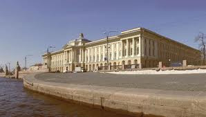

Текстовая страница, 1 колонка

В соответствии с законом Санкт-Петербурга от 25 июля 2005 года № 411-68 «О территориальном устройстве Санкт-Петербурга», территория Санкт-Петербурга делится на 18 районов. В границах районов располагаются 111 внутригородских муниципальных образований: 81 муниципальный округ (некоторым из них сразу были присвоены названия, некоторым — позже, некоторые до сих пор называются по номерам), 9 городов и 21 посёлок (внутригородские территории города федерального значения Санкт-Петербурга).
История административно-территориального деления
25 мая 1718 года указом Петра I Санкт-Петербург был разделён на 5 частей:
1737 — выделена Литейная часть, в состав которой включена Выборгская сторона.
1756 — Выборгская сторона передана в Санкт-Петербургскую часть.
1767 — Адмиралтейская часть разделена на три части, образованы три предместья: Александро-Невское, Московское и Лифляндское.
1782 — территория города разделена на 11 частей: 1-я, 2-я, 3-я и 4-я Адмиралтейские части, Санкт-Петербургская часть, Васильевский остров, Московская сторона, Нарвская сторона, Каретная часть, Рождественская часть и Выборгская сторона. Определены «загородные места»: Аптекарский остров, Каменный остров, Елагин остров, Крестовский остров, Петровский остров, остров Голодай, остров Резвый, Канонерский остров, Екатерингофский остров, Лоцманский остров, Охтинская слобода, Старая Деревня.
1858 — Охтинская часть включена в состав Выборгской стороны.
1865 — 1-я Адмиралтейская часть переименована в Адмиралтейскую, 2-я Адмиралтейская — в Казанскую, 3-я Адмиралтейская — в Спасскую, 4-я Адмиралтейская — в Коломенскую, Каретная часть — в Александро-Невскую.
Начало XX века — выделено 7 пригородных участков, подчинённых городской администрации: Новодеревенский, Лесновский, Охтинский, Полюстровский, Петергофсккий, Шлиссельбургский, Александровский.
Май 1917 — территория города Петрограда была разделена на 15 районов: Адмиралтейский, Василеостровский, Выборгский, 1 Городской, 2 Городской, Нарвский, Невский, Новодеревенский, Обуховский, Охтенский, Петергофский, Петроградский, Пороховской, Рождественский и Спасский.
9 апреля 1936 — Из Василеостровского района был выделен Свердловский район, из Выборгского района - Красногвардейский, из Петроградского района - Приморский, из Кировского района - Ленинский. Из Центрального и части Смольнинского района образованы три новых района - Дзержинский, Куйбышевский и Фрунзенский.
19 августа 1936 — в результате ликвидации Ленинградского Пригородного района города Колпино, Детское Село и Петергоф (со Стрельной) были подчинены Ленинградскому совету (но в территорию города не входили). Большая часть района передана в состав Ленинградской области. Таким образом в 1936 году в городскую черту Ленинграда входило 15 районов - Василеостровский, Володарский, Выборгский, Кировский, Красногвардейский, Куйбышевский, Ленинский, Московский, Октябрьский, Петроградский, Приморский, Свердловский, Смольнинский и Фрунзенский. Города Детское Село, Колпино, Кронштадт и Петергоф подчинялись Ленинградскому Совету, но в черту Ленинграда не входили.
9 февраля 1937 — Детскосельский район переименован в Пушкинский. Образован районный Совет в Кронштадте.
1946 — в августе образован Курортный район за счёт разукрупнения Райволовского района Ленинградской области. В октябре на части территории Курортного района образован Сестрорецкий район.
1949 — Володарский район переименован в Невский.
1950 — Кронштадтский райсовет упразднён, административные функции в городе переданы Управлению гражданской администрации при коменданте крепости Кронштадт. Ряд населённых пунктов Красносельского, Павловского и Парголовского районов передан в подчинение райсоветов Ленинграда.
1952 — Выборгский район переименован в Сталинский. Рабочие посёлки Усть-Ижора и Понтонный Павловского района Ленинградской области переданы в подчинение Колпинского райсовета Ленинграда.
1953 — часть территории упразднённого Павловского района Ленинградской области передана в подчинение райсоветов Ленинграда, а город Павловск — в подчинение Ленгорсовета.
1954 — рабочие посёлки упразднённого Парголовского района в подчинение Сталинского и Сестрорецкого райсоветов Ленинграда. Девять сельских населённых пунктов Всеволожского, Гатчинского и Тосненского районов Ленинградской области переданы в подчинение Пушкинского и Сталинского райсоветов и Павловского горсовета.
1955 — населенные пункты Веселый Поселок, Сосновка, Уткина Заводь, Пороховые и поселок завода имени Сталина Всеволожского района Ленинградской области включены в состав Невского и Калининского районов Ленинграда.
1956 — Пулковский поссовет упразднён, его населённые пункты переданы в подчинение Московского райсовета.
1958 — в черту города включены поселок Пулково и территория Среднерогатского поссовета, находящиеся в административном подчинении Московского райсовета Ленинграда. В Кронштадте восстановлен райсовет.
1959 — Курортный упразднён, его территория включена в состав Сестрорецкого района, образован Зеленогорский горсовет. Павловский горсовет подчинён Пушкинскому райсовету.
1960 — в черту Ленинграда включены населённые пункты Нева, Русановка, Яблоновка, Малиновка, Жерновка, дачи Безобразова и Долгорукова и поселок Жерновского участка совхоза «Выборгский» Всеволожского района Ленинградской области.
1973 — образованы районы: Красногвардейский (из частей Калининского и Невского районов), Красносельский (из города Красное Село, рабочих посёлов Горелово и Можайский и посёлка Торики, переданных из Ленинградской области, и частей Кировского района).
1977 — частично изменены границы Ждановского, Петроградского и Выборгского районов.
1978 — город Ломоносов Ленинградской области отнесён к категории городов районного подчинения, с передачей его и части территории Ломоносовского района из Ленинградской области в пригородную зону Ленинграда. Горсовет Ломоносова передан в административное подчинение Петродворцовому райсовету. Посёлок Хвойный Гатчинского района Ленинградской области передан в административное подчинение Красносельскому райсовету Ленинграда.
1989 — Ждановский район переименован в Приморский, города Зеленогорск, Ломоносов и Павловск переданы в непосредственное подчинение Ленгорсовету.
1996 — принят закон Санкт-Петербурга «Об административно-территориальном устройстве Санкт-Петербурга» № 186-59, объединены «собственно» Санкт-Петербург и территория, подчинённая администрации Санкт-Петербурга.
2005 — принят закон Санкт-Петербурга № 411-68 «О территориальном устройстве Санкт-Петербурга», определяющий современное территориальное устройство.
Подписка на рассылку
Подпишитесь на рассылку новостей, чтобы следить за событиями вашего
района
Опрос
В каком виде добровольной помощи городу и району вы готовы принять участие?
Контакты
- Адрес:
- Санкт-Петербург, Гражданский пр-т, д 84
- Телефон:
- (812) 555-26-59
- E-mail:
- momoa@list.ru
Информация
2014 ©
Внутригородское муниципальное образование Санкт-Петербурга муниципальный округ Академическое
Внутригородское муниципальное образование Санкт-Петербурга муниципальный округ Академическое